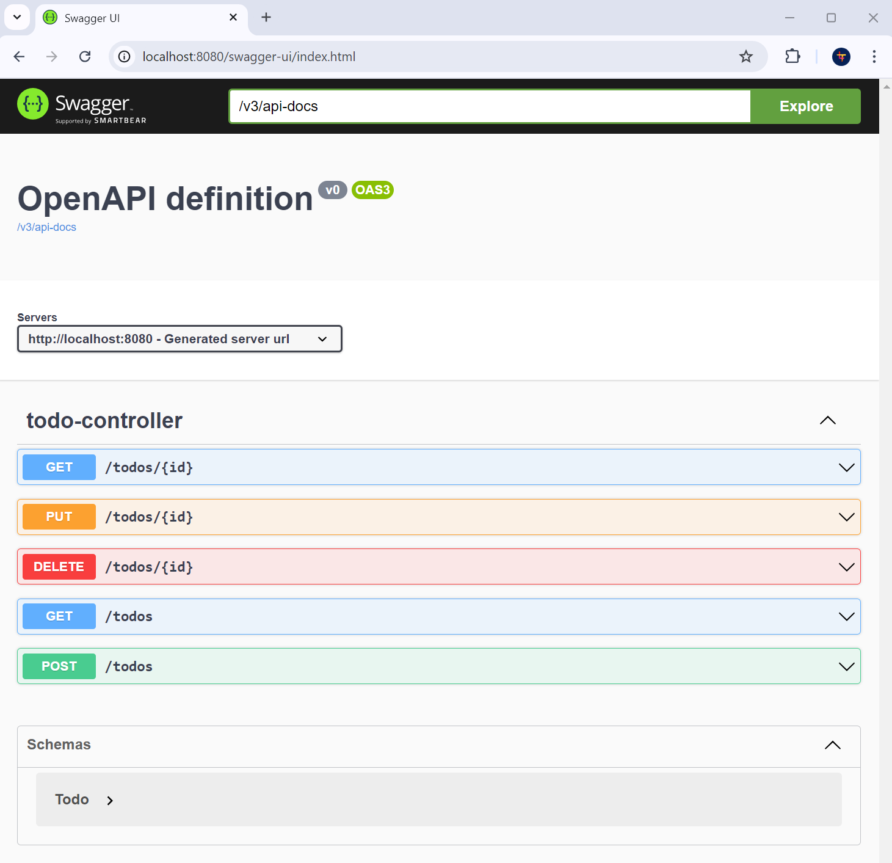

Add Swagger
In this section, we'll integrate Swagger into our REST API to facilitate documentation and endpoint discovery. Swagger provides an interactive interface that lets you view and test our API directly from a browser.
Step 1: Add Swagger dependencies
To begin with, we need to add the necessary Swagger dependencies to our pom.xml file. Let's add the following dependency:
<dependency>
<groupId>org.springdoc</groupId>
<artifactId>springdoc-openapi-starter-webmvc-ui</artifactId>
<version>2.0.2</version>
</dependency>
Step 2: Access the Swagger interface
Once the dependencies have been added, we can start our application. Swagger will be available at the following URL:
http://localhost:8080/swagger-ui/index.html
On this interface, we can see all our API endpoints and their descriptions. We can also run tests directly from this interface, which is very useful for development and documentation purposes.

Conclusion
With the integration of Swagger, our REST API is now interactively documented, facilitating its use by developers and end-users alike. This documentation enables us to maintain a clear understanding of the functionalities offered by our API, while providing an integrated testing platform.